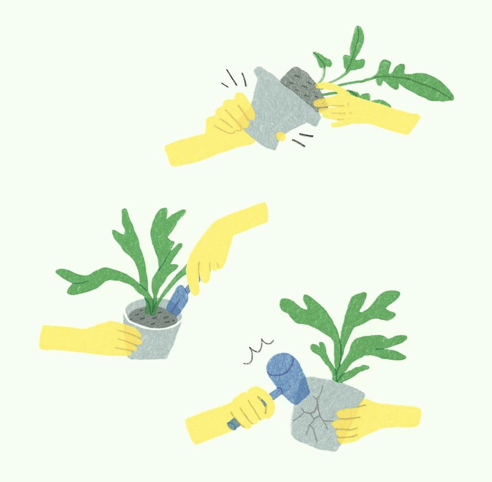
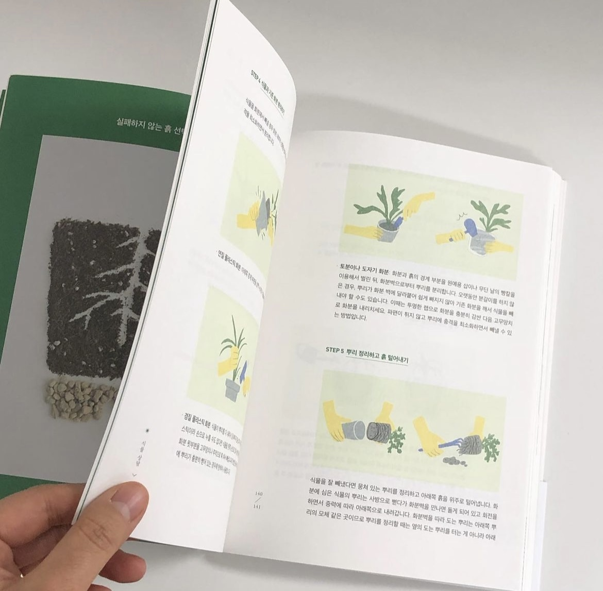
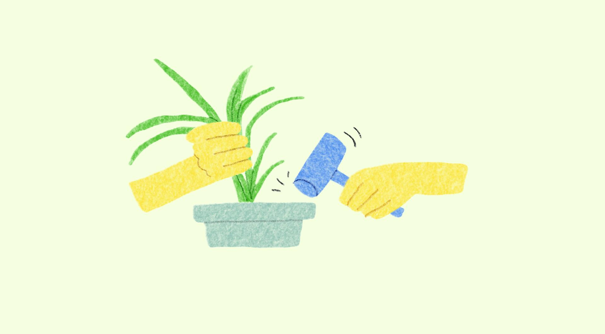
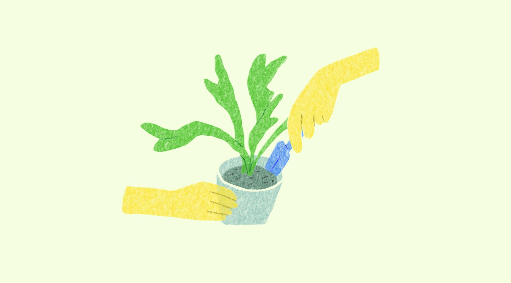
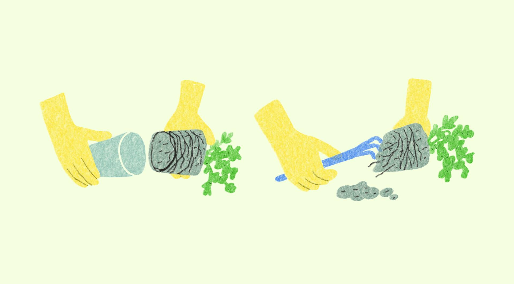
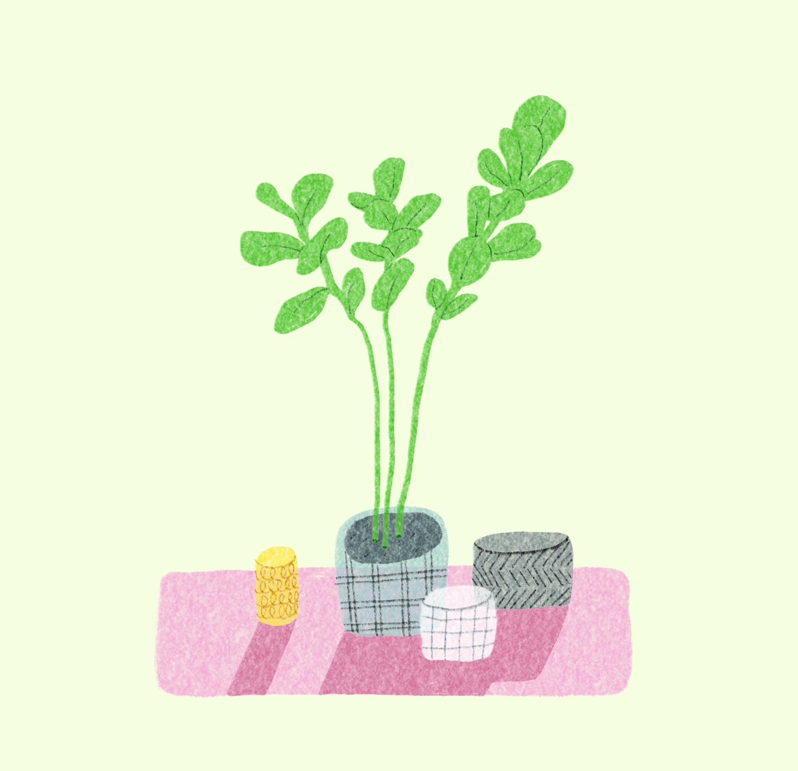
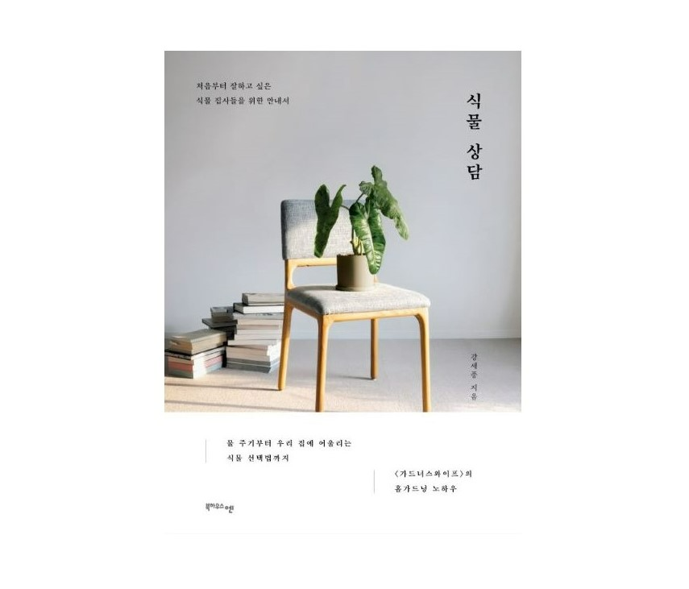

가드너스 와이프의 강세종님의 책에 들어가는 식물 삽화를 작업했습니다. 화분에 어떻게 식재하는지, 식물을 어떻게 다루는지 노란 손을 이용해 장면을 그렸어요. 이미 다양한 식물들의 멋진 사진이 가득한 책이어서 컬러는 3-4가지로 한정해서 사용했습니다.
식물을 좋아하는 사람으로서 가장 공감했던 한 구절이에요.
"초보 집사들은 종종 가장 기본적인 물 주기 단계에서부터 좌절을 경험하는데, 이는 주로 과습 상태의 식물과 물이 부족한 상태의 식물을 구분하지 못해 발생합니다." p.44
I worked on botanical illustrations for a book by Kang Se-jong of The Gardener's Wife. I drew scenes using yellow hands to show how to pot plants and handle them. Since the book was already filled with beautiful photographs of various plants, I kept the color palette limited to just three or four tones.
This was the line that resonated with me most, as someone who loves plants:
"Beginner plant parents often experience frustration at the most basic stage — watering — because they can't tell the difference between an overwatered plant and an underwatered one." p.44